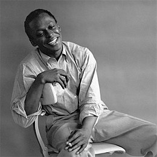
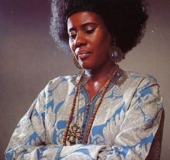

Le Jazz
Le jazz est un genre de musique né aux États-Unis au début du XXe siècle. Issu du croisement du blues, du ragtime et de la musique européenne, le jazz est considéré comme la première forme musicale afro-américaine. Tout au long du XXe siècle, il a acquis une large popularité au-delà des frontières des États-Unis.
Le jazz est donc un mélange de courants musicaux très divers et au cours de son évolution, il a su intégrer de nombreuses influences et se prêter à de nombreux métissages, comme le blues, le rock, la musique latine, le hard rock, et ainsi de suite.
Louis Armstrong

Louis Armstrong est né, le 4 août 19011, dans une famille noire pauvre de La Nouvelle-Orléans, dans le quartier de Jane Alley miné par la violence et la prostitution. Son père William Armstrong (1881–1922), ouvrier dans une fabrique de térébenthine, quitte le foyer familial peu après sa naissance. Sa mère Mary ”Mayann” Albert 2(1886–1942), est bonne à tout faire chez les Blancs et doit vivre de ses charmes pour s'en sortir, si bien qu'il est élevé par sa grand-mère paternelle Joséphine (née esclave).
Miles Davis
Le 26 mai 19262, Cleorita Henry donne naissance à Miles Dewey Davis III, à Alton (Illinois), sur les bords du Mississippi. L'enfant grandit dans un milieu familial relativement riche (son père Miles Dewey Davis II est chirurgien-dentiste) et mélomane : sa mère joue du piano et du violon, et sa grand-mère maternelle était professeur d'orgue dans l'Arkansas3,4 ; sa sœur aînée, Dorothy, et son frère cadet, Vernon, étudient également la musique5. L'année suivante, la famille déménage et s'installe à East Saint Louis, Illinois, où son père a ouvert un cabinet dentaire. Lorsque le jeune Miles fréquente l’école primaire, sa famille habite un quartier à prédominance blanche, où il fait pour la première fois la douloureuse expérience du racisme6. Le garçon se passionne pour le sport — baseball, football américain, basket-ball, natation et surtout boxe — mais aussi pour la musique : il suit avec passion l'émission radiophonique de jazz Harlem Rhythms3. À l'âge de neuf ou dix ans, un ami de son père, le docteur John Eubanks, lui offre une trompette, dont il commence rapidement à jouer3.

Alice Coltrane
Alice Lucile Mcleod est née à Détroit en 19371, au sein d'une famille de musiciens2, elle est la fille de Solon et d'Anna McLeod, une pianiste et chanteuse d'église, son frère Ernie Farrow, deviendra un bassiste professionnel. Alice chante et joue pour le chœur de l'église baptiste du Mont de l'Olivier que ses parents dirigent3. Dès l'âge de sept ans, elle étudie la musique classique puis elle travaillera l'harmonie et l'orgue. Durant ses études secondaires à la Cass Technical High School (en) de Detroit, elle côtoie des musiciens comme le pianiste Hugh Lawson (en) ou le batteur Earl Williams. Elle y a parmi ses professeurs de musique, la harpiste Velma Froude, mais elle délaissera la harpe pour se consacrer au piano et au vibraphone3. En 1959, elle part pour Paris pour apprendre le piano-jazz auprès de Bud Powell4.
Louis Armstrong
Louis Armstrong est né, le 4 août 19011, dans une famille noire pauvre de La Nouvelle-Orléans, dans le quartier de Jane Alley miné par la violence et la prostitution. Son père William Armstrong (1881–1922), ouvrier dans une fabrique de térébenthine, quitte le foyer familial peu après sa naissance. Sa mère Mary ”Mayann” Albert 2(1886–1942), est bonne à tout faire chez les Blancs et doit vivre de ses charmes pour s'en sortir, si bien qu'il est élevé par sa grand-mère paternelle Joséphine (née esclave).